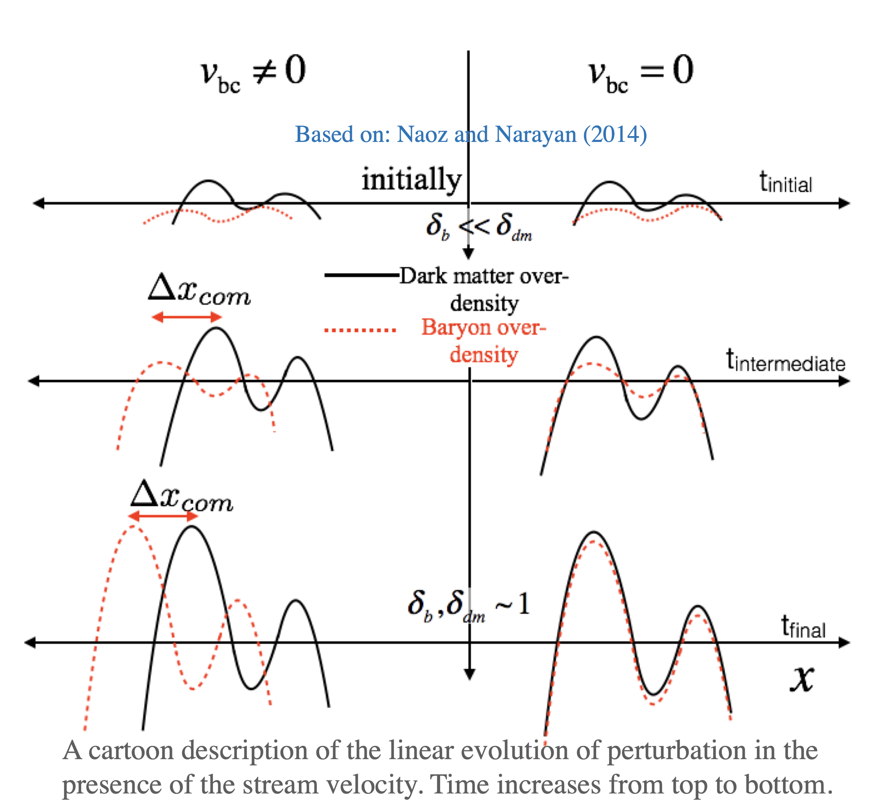

Supersonically-induced gas objects (SIGOs) with little to no dark matter (DM) component are predicted to exist in patches of the universe with a non-negligible relative velocity between baryons and the DM at the time of recombination (see Naoz and Narayan (2014) ). Using AREPO hydrodynamic simulations, we find that the gas densities inside of these objects are high enough to allow stars to form. SIGOs may be linked with present-day metal-poor local globular clusters. In the figure we see example for SIGO (projected) with its environment (adopted from Chiou et al 2021.)
Supersonically-induced gas objects (SIGOs) with little to no dark matter (DM) component are predicted to exist in patches of the universe with a non-negligible relative velocity between baryons and the DM at the time of recombination (see Naoz and Narayan (2014) ). Using AREPO hydrodynamic simulations, we find that the gas densities inside of these objects are high enough to allow stars to form. SIGOs may be linked with present-day metal-poor local globular clusters. In the figure we see example for SIGO (projected) with its environment (adopted from Chiou et al 2021.)
In the standard model of structure formation, due to the baryon-radiation coupling, baryon over-densities at the time of recombination (z ∼ 1020) were about five orders of magnitude smaller than dark matter over-densities. Recently, Tseliakhovich and Hirata (2010) showed that not only the amplitudes of the dark matter and baryonic density fluctuations were different at early times, but so were their velocities. After recombination, the baryons decoupled from the photons, and their subsequent evolution was dominated by the gravitational potential of the dark matter. In the period following recombination, the baryons underwent rapid cooling. At this point, their relative velocity with respect to dark matter, which at recombination was on the order of ∼ 30 km / sec, was, in fact, supersonic. Tseliakhovich and Hirata (2010) also showed that this relative velocity between the baryons and the dark matter remained coherent on scales of a few megaparsecs, and in these regions, it can be modeled as a stream velocity.
Although formally a second-order effect, the stream velocity has far-reaching consequences on a wide variety of cosmological phenomena. In particular, the non-linear effects of the stream velocity on the first structures were subsequently investigated using numerical simulations, as well as analytically, and it was shown that the stream velocity tends to suppress the formation of gas-rich small-scale structures at the early Universe. Additionally, this relative velocity may have nontrivial effects on the cosmological 21 cm signal, the formation of primordial black holes, and even on primordial magnetic fields.
 The stream velocity introduces a phase shift between the baryons and the dark matter (see cartoon). This phase shift translates into a phys- ical separation between the dark matter and baryon over-densities. In Naoz and Narayan (2014) we used linear analysis to calculate the phase difference between the baryons and dark matter. In this work, using the framework of linear analysis, we showed that these baryons might have become non-linear and formed baryon-dominated bound objects that are physically separated from their parent dark matter halos. We coin these structures “supersonically-induced gas objects” (SIGOs). For an interesting range of masses, we found that the spatial offset is larger than the virial radius of the dark matter halo, allowing the baryonic clumps to survive as independent dark matter-free objects.
Significantly, Chiou et al. (2019), using numerical simulations, combined with semi-analytical modeling, we showed that the present-day, local, absolute visual magnitude and the SIGOs characteristic scale is consistent with the observed globular cluster population, see Figure. This hints at a possible identification of the SIGOs as the progenitors of present day, low metalicity, globular clusters.

In the Figure to the left, from Chiou et al. (2019), we speculated on how SIGOs and DM/G objects will be observed today. Assuming a burst-like star formation before reionization (z=10), we adopted an initial mass function (IMF) for the objects. In particular, we followed Decressin et al. (2007), and a Salpeter IMF for the DM/G. We calculated the fraction of spectral types of stars that evolve along the main sequence. The majority of the stars that survive to the present day will be G and K type stars, as well as red giants. Given this population, we subtracted their various bolometric corrections. We then roughly estimated each object’s visual bolometric magnitude. We also estimated that the observed stellar cluster that formed within the SIGOs corresponds to the highest density peak. We also over-plotted the region of the parameter space that is associated with GCs (red box) and Andromeda and the Milky Way sub-groups (blue area; McConnachie 2012). Heuristically, the SIGOs are consistent with the absolute visual magnitudes of present-day, local GCs. Although the SIGOS in this simulation only contain primordial gas, we speculated that some self-enrichment or second population-formation mechanism (such as pericenter passage of orbits about the nearest DM halo) may contribute to the nonzero metallicity in metal-poor GCs.
Particularly, in Lake et al. (2021), we studied SIGO abundances semi-analytically: using perturbation theory, we predict the number density of SIGOs analytically and compare these results to small-box numerical simulations. Using the agreement between the numerical and analytic calculations, we extrapolated the large-scale variation of SIGO abundances over different stream velocities. Thus, we predicted similar large-scale variations of objects with high gas densities before reionization that JWST could possibly observe. In the Figure on the left, we show SIGOs' map density contrast at z = 20. Here the color scale represents the fluctuation of SIGOs abundances resulting from the variations in stream velocity on large scales.
If indeed SIGOs are progenitors of globular clusters, then we expect a comparable variation of globular cluster abundances over large scales. Significantly, we find that the expected number density of SIGOs is consistent with observed globular cluster number densities. In Lake et al. (2021), we found that the mean SIGO number density is ∼0.5 Mpc3 at z ∼ 14, which is consistent to an order of magnitude with the observed local density of globular clusters, estimates of which range from 0.72 Mpc3 (Rodriguez et al. 2015) to a few × Mpc3 (e.g., Portegies Zwart & McMillan 2000; Harris et al. 2013). More notably, this SIGO number density is almost equal to the observed abundance of low-metallicity GCs, 0.46 Mpc3 (Rodriguez et al. 2015). As SIGOs are early structures with correspondingly low (expected) metallicities, this could be another indicator of a connection between SIGOs and (particularly low-metallicity) GCs.